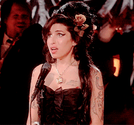
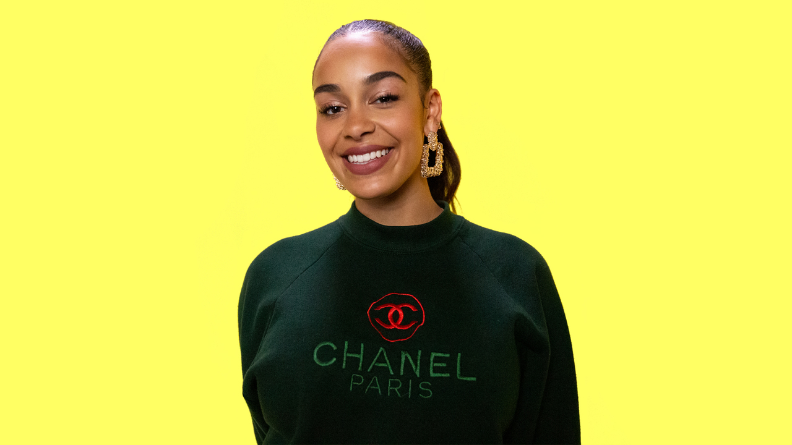
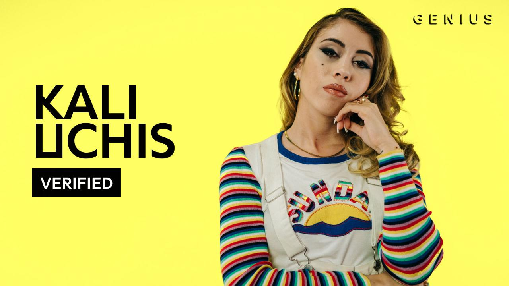
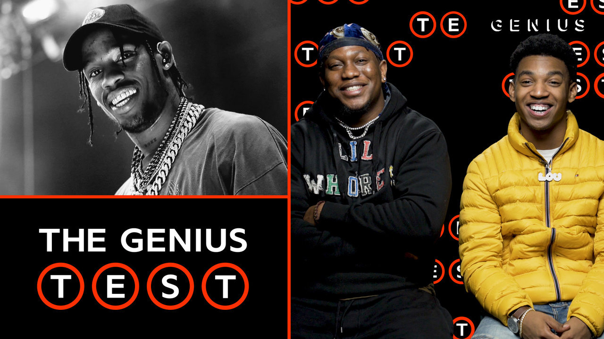
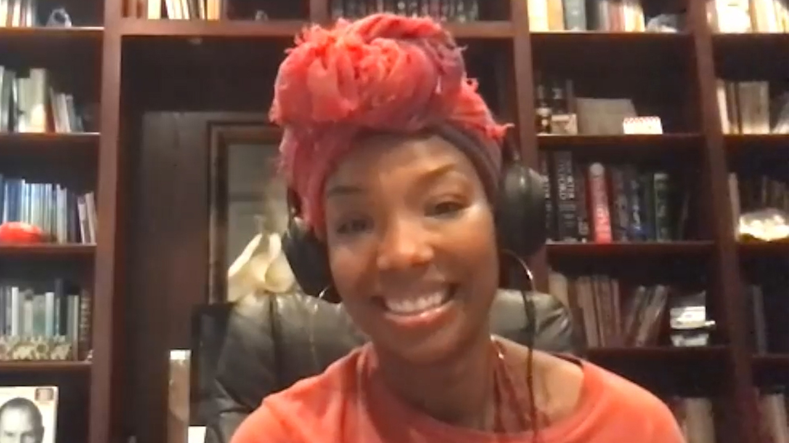
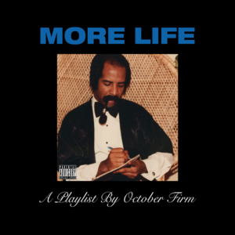
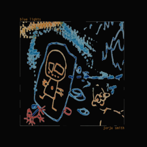
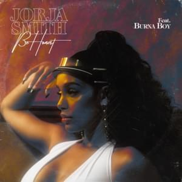
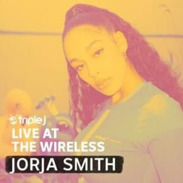
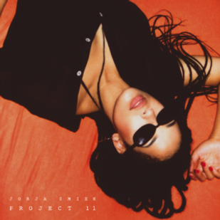

Jorja Smith
1,788Jorja Smith (born 11 June 1997) is an English singer/songwriter from Walsall...
Top Scholar  Ionland17

Jorja Smith Breaks Down The Meaning Of...

Kali Uchis Breaks Down "Tyrant"
The Making Of "Wakanda" With Ludwi...

Zias & B. Lou Take The 2018 Music Quiz

Brandy Reacts To New R&B Hits (Snoh Aalegra,...
Popular Jorja Smith songs

Get It Together
Drake, Jorja Smith
592.1K
Jorja Interlude
Drake, Jorja Smith
534.7K

Blue Lights
Jorja Smith
449.5K
Don't Watch Me Cry
Jorja Smith
342.7K
On My Mind
Jorja Smith
281.1K

Be Honest
Jorja Smith
280.7K
Let Me Down
Jorja Smith
278.8K
I Am
Jorja Smith
244.3K
Teenage Fantasy
Jorja Smith
226.8K
Ladbroke Grove
AJ Tracey, Jorja Smith
218.8K
Popular Jorja Smith albums

triple j Live At The Wireless (Laneway 2019)
2020
Love (Goodbyes Reprise)
2019
The One - Single
2018
Lost & Found
2018
 Spotify Singles
2017
Spotify Singles
2017

Project 11 - EP
2016
Home J Jorja Smith